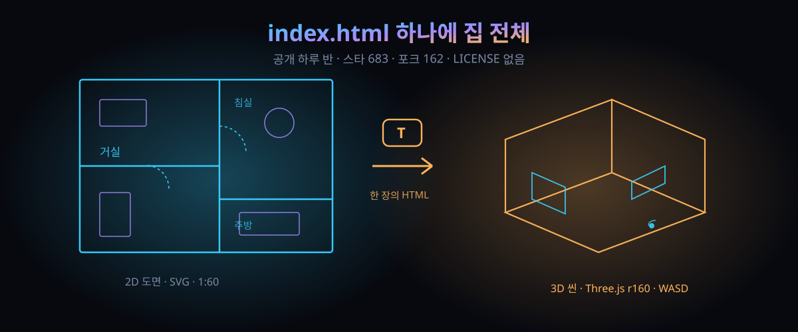

683스타가 하룻밤에 몰린 한 장의 HTML — 프레임워크 없이 2D 도면과 3D 집을 함께 돌리는 법

먼저 결론. 이 프로젝트의 무기는 기능 목록이 아니라 유통 방식이다. 설치도, 계정도, 빌드도, 서버도 전부 0. 열면 바로 방이 나온다.
지난 주말 GitHub에 floorplan-3d라는 저장소가 생겼다. 2D 평면도에 가구를 올리면 그대로 3D 방이 되는 도구인데, 코드 전체가 index.html 파일 하나에 담긴다. 공개 이후 24시간 남짓 지난 시점에 스타 683개, 포크 162개를 찍었다(GitHub API 실측, 2026-09-30).
국내 인테리어 앱은 대부분 가입을 먼저 요구하거나 3D 뷰어에 엔진 라이선스를 얹는다. 이 도구는 정반대 방향이다. 파일 하나로 끝난다. 이 단순함이 왜 하룻밤에 683개의 '좋아요'를 모았는지, 개발자 눈으로 쪼개 본다.
30초 요약
| 항목 | 내용 |
|---|---|
| 무슨 물건 | 브라우저에서 도는 평면도 기반 인테리어 편집기. 2D 도면에 가구 배치·벽 철거·치수 측정, 버튼 하나로 Three.js 3D 장면 전환 |
| 화제 되는 이유 | 저장소 전체가 HTML 파일 1개(183KB). 프레임워크·빌드 단계·백엔드·계정 전부 없음. GitHub 공개 하루 반 만에 스타 683·포크 162 (API 실측) |
| 구현 구성 | 2D는 SVG, 3D는 Three.js r160(OrbitControls·PointerLockControls 등). 라이브러리 자체는 jsDelivr CDN에서 내려받으므로 3D 첫 실행엔 네트워크가 필요 |
| 데이터 소재 | 저장소가 명시한 최소 데이터 구조 5개: ROOMS(방 폴리곤), WALLS·WINS(벽·창), MATS(바닥재 단가), LIB(가구 라이브러리), buildFurniture()(3D 조립 함수) |
| 저장 위치 | 브라우저 localStorage. 서버 전송은 없다 — 바꿔 말하면 브라우저 저장소를 비우는 순간 작업도 사라진다 |
| 비어 있는 것 | 라이선스 표기가 없고, 설명·홈페이지란도 비어 있으며, 기여자는 5회 커밋한 1명. "오픈소스"라는 말만 믿고 바로 쓰면 안 되는 이유 |
1. 무엇이 터졌나
물건 자체는 또렷한 실사용 도구다. 원시 평면도를 1:60·1:100 축척으로 띄우고, 60종류가 넘는 가구·가전 아이콘을 드래그로 올린다. 방향은 Shift로 자유각까지 돌릴 수 있고, 벽에 가까이 가면 저절로 붙는다. 벽을 허물되(내력벽은 표식을 따로 구분), 방 이름 표시를 끄고, 치수를 재는 기능까지 2D판에 다 들어 있다.
볼거리는 3D 쪽이다. T 키 한 번이면 도면이 방으로 무너지고, PC에서는 WASD로 직접 걸어 다니며 문까지 여닫는다. 모바일에서는 가상 조이스틱이 대신 잡는다. 일조 시간 슬라이더로 해 위치를 옮기고, 야간 조명을 켜고, 벽을 잘라 보이는 단면 모드도 달려 있다. 3D에서 가구를 집어 옮기면 2D 도면이 즉시 따라온다 — 두 화면이 같은 상태를 공유하는 구조다.
여기까지는 인테리어 앱에서 자주 보던 기능 목록이다. 다른 지점은 세 개다. 첫째, 방별 면적과 전용 사용 면적이 자동 합산되고, 방마다 바닥재(원목 마루·타일·대리석·테라초·카페트)를 고르면 면적에 5% 소모량을 얹어 견적까지 나온다. 둘째, 작업 내용이 전부 브라우저 안에만 남는다. 셋째 — 스타를 만든 건 사실 이쪽이다 — 저장소를 열어 보면 파일이 3개뿐이다: README.md, .gitignore, index.html. 소스 전체가 HTML 한 장, 183,107바이트 안에 든다(API 실측).
2. 왜 대단한가
① 설치 마찰 0이 만드는 확산 곡선
GitHub에서 스타가 몰리는 저장소를 훑어보면, 갈리는 지점은 대개 "지금 바로 만져볼 수 있나"다. npm 설치 세 개, 환경 변수 두 개, docker-compose 한 장이 끼어드는 순간 체험자는 10분의 1로 줄어든다. 이 도구는 클론해서 브라우저로 열면 끝이다. 데모 사이트조차 필요 없다 — 저장소 자체가 데모다. 계정을 요구하지 않는 점도 한몫 크다: 2026년 지금, 브라우저 도구인데 이메일을 안 물은다는 것 자체가 마케팅 문구가 됐다.
② '단일 인라인 앱'의 되살아남
프런트엔드 업계는 지난 10년간 앱을 쪼개는 데 공을 들였다. 컴포넌트, 번들러, 트리 쉐이킹, 모노레포. 그런데 최근 GitHub 급상승 창을 보면 정반대 방향의 프로젝트가 심심찮게 1위를 차지한다. HTML 파일 하나에 CSS·JS·데이터·3D 모델 생성 로직까지 전부 심어 놓은 것들다. 이유는 개발 편의가 아니라 배포 구조다. 파일 하나는 메일으로도, USB로도, 사내 메신저 첨부로도 그대로 이동한다. CDN에서 three.js 한 줄을 끌어오는 것 외에는 아무것도 필요 없다.
③ 데이터를 '설정'이 아니라 '바로 손대는 변수'로 꺼내 둔 것
남의 집이 아니라 자기 집 도면을 넣는 법을 README는 파일 안 변수 5개로 안내한다. ROOMS에 방 폴리곤을, WALLS와 WINS에 벽과 창을, MATS에 바닥재 단가를, LIB에 가구 목록을 넣고, buildFurniture()로 3D 모양을 조립한다. 데이터가 소스 코드와 같은 파일 안에 있다는 건 흠처럼 들리지만, 역설적으로 바로 이점이 "코드만 고쳐 내 집으로 교체"를 가능하게 한다. 라이브러리로 배포된 게 아니라 편집 가능한 템플릿으로 배포된 셈이다.
④ 스타 수치의 진짜 의미
하루 만에 683스타는 강력한 신호다. 다만 이 숫자는 "많이 쓴다"가 아니라 "많이 저장했다"에 가깝다. 포크 162 대 스타 683의 비율(약 1:4.2)은 보통 저장소보다 포크 비중이 높은 편인데, "내 도면 넣어서 써보자"는 시도가 많았다는 뜻으로 읽힌다. 구독은 1명, 열린 이슈 3개, 기여 커밋 5회 — 관심은 폭발했고 유지보수 인프라는 아직 없다.
3. 바로 써먹기
이 프로젝트에서 훔칠 물건은 인테리어 기능이 아니라 '단일 파일 배포'의 설계 판단들이다. 같은 지점에서 자기 도구를 만들어 볼 사람을 위해 단계표를 깔았다.
| 단계 | floorplan-3d의 선택 | 내 도구에도 넣을 판단 |
|---|---|---|
| 1. 경계 짓기 | 3D 엔진만 CDN(r160)로 외주, 나머지 전부 인라인 | 외부 의존성은 '크기 때문에 못 통째로 넣는 것'에만 허용하고 목록화할 것 |
| 2. 상태 저장 | localStorage 자동 저장 + JSON 내보내기/가져오기 백업 | 서버 없는 앱에서 저장 실패는 곧 데이터 손실. 내보내기 버튼을 1단계에 둘 것 |
| 3. 사용자 데이터 주입 | ROOMS·WALLS 등 데이터 덩어리를 코드 상단 변수로 노출 | "설정은 코드 안에"를 창피해하지 말 것 — 문서화하면 기능이 된다 |
| 4. 단축키 설계 | 2D/3D 전환 T, 삭제 Delete, 복제 ⌘D, 실행 취소 ⌘Z 등 한 손 배열 | 키맵 표를 README에 두는 것만으로 "전문 도구 인상"이 생긴다 |
| 5. 견적 엔진 | 면적 합산 × 단가 × 소모 5% — 곱셈 두 번짜리 견적을 내장 | 복잡한 계산보다 '근거 있는 공수 하나'가 사용자한텐 쓸모 있다 |
3D를 안 다뤄 본 개발자라면 이 저장소를 읽을 순서가 있다. 먼저 2D 편집부가 SVG 요소를 직접 조작하는지 보자(그렇다면 React 없이 DOM API로 구현한 프런트엔드의 좋은 교재다). 그다음 2D 상태와 3D 씬이 어떤 단위로 동기화되는지, 마지막으로 buildFurniture()에서 박스·원통 같은 기본 도형으로 가구를 조립하는 트릭을 본다. 3D 모델 파일을 통째로 로딩하는 대신 전부 코드로 때우는 방식이라, glTF 로더조차 안 쓴다.
당장 써보는 법은 더 간단하다. 저장소를 클론해 index.html을 열고, T로 3D 전환, WASD로 거실을 걸어 다니고, 방 하나 골라 바닥재를 대리석으로 바꿔 견적 칸이 움직이는 것을 확인할 것. 10분이면 이 파일 하나가 하는 일의 전부를 체험한다.
4. 해외 반응 쟁점
① "AI가 썼다"는 의심. 공개 하루 반 만에 이 기능 목록과 한글/영문 이중 UI까지 갖춘 파일이 개인 계정에 나타난 걸 두고, 생성형 코딩 산물이 아니냐는 관측이 나온다. 제작자 계정의 커밋 기록은 5회다 — 대량 코드를 통째로 밀어 넣은 형태라, 수작업이든 AI 원조든 최종 검증은 커밋 단위로는 추적 불가다. 이런 프로젝트는 결과물이 전부다. 동작 자체는 브라우저로 검증 가능하지만, "혼자 5시간 만에 만든 건가"는 확인할 방법이 없다.
② 라이선스 공백. 저장소에는 LICENSE 파일이 없다. GitHub 기본 규칙상 라이선스 없는 공개 코드는 "읽을 권한만 있고 배포·수정 권리는 저자에게 유보"된 상태다. 개인이 자기 집 도면을 넣어서 놀 땐 문제없지만, 사내 서비스나 상품에 얹는 순간 법적 리스크다. 스타 683개 뒤에 라이선스 이슈를 지적하는 목소리도 함께 나온 건, 이번 주 GitHub의 단골 풍경이다.
③ CDN 의존성 논쟁. "완전 오프라인"을 표방하진 않는다(README도 3D 첫 실행에 네트워크가 필요하다고 못 박아 둔다). 그래도 jsDelivr 한 줄 의존을 두고 논쟁이 붙었다. 반론은 "three.js를 인라인으로 넣으면 파일이 1MB 넘게 불어나니 당연한 타협"이라는 쪽. 오프라인 상황이 민감한 사람(비행기·현장 작업)은 three.module.js를 받아 경로만 바꾸면 된다는 실사용 팁도 달렸다 — jsDelivr의 해당 경로는 실제로 살아 있다.
④ 데이터 주권 칭찬. "시공 업체 도면이 서버로 새지 않는다"는 점이 가장 정직한 강점이라는 평이 많다. 계약도 안 한 집 도면을 앱에 올리는 걸 꺼리는 사용자는 생각보다 많다. localStorage라 브라우저 초기화 시 사라지는 반대면도 함께 지적된다 — JSON 내보내기를 습관화하라는 조언이 달렸다.
5. 마시기 전 주의
- 라이선스 미표시 저장소다. 재사용·재배포 전 LICENSE 추가 여부를 확인하고, 없으면 직접 이슈로 문의하자. 스타 수가 허락을 대신하진 않는다.
- 견적 수치는 바닥재 면적 +5% 소모량이라는 단순 규칙이다. 시공비·인건비·부자재가 빠진 '재료비 가늠자'로만 쓸 것. 실제 계약 근거로 쓰면 안 된다.
- localStorage는 브라우저 저장소다. 시크릿 모드, 저장소 정리, 기기 교체는 작업물 전멸과 같은 뜻이다. 세션 종료 전 JSON 내보내기를 생활화할 것.
- 벽 철거 기능은 실제 구조 검토와 무관하다. 내력벽 표식은 저장소가 구분해 둔 표시일 뿐, 실제 시공 안전 판정은 구조 기술사 영역이다.
- 중국어 원작 기반이라 한/영 전환 후에도 일부 라벨이 새어 나올 수 있다. UI 완성도 기대치는 '사이드 프로젝트'로 맞춰 두면 실망이 없다.
바로 가기
git-bug — "이슈 추적기에 git이 왜 필요해?"에 7년 만에 나온 답 — 저장소 구조 자체가 제품 기획이 된 또 다른 사례. 이번 잔과 같은 '유통 방식이 곧 경쟁력' 계열.
F-Droid 2.0 — "플레이 없이 폰 쓰기"의 10년 만의 재출범 — 설치 마찰을 없애는 일이 왜 사용자 획득 곡선을 바꾸는지 보여주는 잔.
AI·오픈소스 시리즈 — 해외에서 먼저 검증된 프로젝트만 골라 해부한다.
도구 코너 — 로컬 개발 워크플로 체크리스트 (준비 중).